01기초
자바 웹 애플리케이션 개발을 위한 프로그래밍 기초
개발자의 사고방식과 데이터를 다루는 법을 익힙니다.
- SW 개발 이해 · CS 기초
- 자바 기본 문법
- 객체지향 프로그래밍(OOP)
- SQL (MySQL)
- 데이터베이스 모델링
- DB 연동 Java 프로그래밍
168h
자바 한 줄부터 시작해, 현장의 문제를 정의하고 AI 서비스를 배포·운영까지 해내는 엔지니어로 성장하는 8개월 로드맵입니다.
하이미디어 강남 · 1993년 설립 · 전국 14개 캠퍼스 · 고용노동부 우수훈련기관 5년 인증
FDE(Forward Deployed Engineer)는 고객의 현장에서 문제를 직접 정의하고, 맞는 AI 기술을 골라 서비스로 만들고, 배포·운영까지 책임지는 엔지니어입니다. 이 과정은 FDE의 다섯 단계를 8개월 동안 모두 직접 해보도록 설계했습니다.
고객의 업무 흐름에서 해결할 문제와 성공 기준을 정합니다.
모델, 프롬프트, 검색 전략을 같은 조건에서 비교해 고릅니다.
웹 서비스와 업무 도구를 호출하는 Agent를 직접 만듭니다.
평가셋으로 품질·응답시간·비용을 재고 개선 전후를 비교합니다.
배포하고 권한·로그·장애 복구까지 운영 절차를 갖춥니다.
현장에 배포하려면 탄탄한 엔지니어링 기반이 먼저입니다. 정규 과정에서 풀스택과 AI 기초를 갖추고, 심화 과정에서 현업 멘토와 실제 서비스를 완성합니다.
서비스를 끝까지 만들고 배포할 수 있는가?
AI 모델을 서비스 안에 녹여낼 수 있는가?
현장의 문제에 맞는 AI를 고르고, 평가하고, 운영할 수 있는가?
막대 길이는 실제 훈련시간에 비례합니다.
프로그래밍 기초부터 클라우드 배포, 생성형 AI까지. 각 단계는 프로젝트로 마무리합니다.
개발자의 사고방식과 데이터를 다루는 법을 익힙니다.
웹의 기본기와 실무 표준 백엔드 프레임워크를 다룹니다.
프론트엔드를 완성하고, 직접 만든 서비스를 클라우드에 올립니다.
실제 업무 유형의 웹 애플리케이션을 처음부터 구현합니다.
기획부터 개발, CI/CD 파이프라인 구축까지 서비스 한 사이클을 경험합니다.
Python부터 LLM, 추론 서버까지 AI 엔지니어링의 기반을 쌓습니다.
AI 모델을 웹 서비스에 통합하는 프로젝트 3종을 완성합니다.
현업이 원하는 역량을 듣고, 취업을 준비합니다.
정규 과정을 마치면 심화 과정의 수강 대상 조건을 그대로 갖추게 됩니다. 심화 과정 대상: IT 교육 이수자 중 AI 기초 지식이 있는 수강생. 별도 선수학습 없이 개강일부터 참여합니다.
모델과 기술을 직접 비교하고, 서비스를 구현해 평가·개선·운영하는 경험을 쌓습니다. 토요일엔 현직 강사 특강, 평일엔 상주 코치와 실습합니다.
| 토요 특강 (8시간) | 학습 내용 | 이어지는 평일 과제 |
|---|---|---|
| 특강 1LLM·AI 개발기술 선택 | 모델 API와 구조화 출력·도구 호출 (2h) AI 코딩과 작업 맥락 관리 (3h) 모델·프롬프트·평가 결과 비교 (3h) | 특강 1 다음 주 평일개인 AI 도구를 만들고 모델별 품질·응답시간·비용을 비교한다. |
| 특강 2RAG 고도화검색 설계 | 문서 파싱·메타데이터·청킹 (2h) 임베딩·하이브리드 검색·리랭킹 (3h) 출처 인용과 검색·답변 평가 (3h) | 특강 2 다음 주 평일같은 질문으로 검색 전략을 비교하고 검색 누락과 답변 오류를 개선한다. |
| 특강 3Agent·MCP구현 | 업무 흐름과 도구 설계 (2h) API·MCP 연결과 상태·메모리 (3h) 재시도·중복 실행·사람 승인과 과업 평가 (3h) | 특강 3 다음 주 평일업무 도구를 호출하는 Agent를 구현하고 실패 복구를 시험한다. |
| 특강 4평가·성능·비용평가·개선 | 평가셋·회귀 시험·실패 분석 (2h) 모델·프롬프트·검색 품질 개선 (3h) 지연·비용·캐시·모델 라우팅 비교 (3h) | 특강 4 다음 주 평일같은 입력으로 개선 전후를 비교하고 기술 선택의 이유를 설명한다. |
| 특강 5배포·운영배포·운영 | 환경·컨테이너·배포 (2h) 외부 시스템 연동·로그·권한 관리 (3h) 장애 재현·진단·복구와 운영 절차 (3h) | 특강 5 다음 주 평일서비스를 배포하고 권한·장애 복구를 점검한다. 프로젝트 준비를 마친다. |
멀티모달 · 로컬 모델 · 파인튜닝 · Graph RAG · 멀티에이전트는 과제와 연결되는 사례나 심화 실습으로 다룹니다. 휴강일은 기수별 일정표로 안내합니다.
현직 강사가 개념과 구현 사례를 설명하고 실습을 지도합니다.
데이터와 조건을 바꿔 결과를 비교합니다. 여러 명이 같은 지점에서 막히면 상주 코치가 30–60분 소강의로 짚어줍니다.
그 주 특강 강사가 사전 질문과 대표 실패 사례를 함께 살펴보고, 답변은 다음 수업에서 확인받습니다.
기업 과제 또는 교육진이 준비한 문제와 자료로 시작합니다. 문제에 맞는 기술을 고르고, 구현한 뒤 평가와 사용 시험을 거쳐 개선합니다.
문제와 성공 기준을 확인하고 구조와 역할을 정한 뒤, 핵심 흐름으로 MVP를 만듭니다.
MVP를 개선하고 사용 시나리오를 시험합니다. 구현 기능과 평가 결과를 공유합니다.
품질·성능·비용을 개선하고 권한·로그·실패 복구를 확인합니다. 배포·운영 문서를 정리합니다.
남은 문제를 수정하고 전체 시연과 평가를 마칩니다. 운영 자료와 개인 포트폴리오를 정리합니다.
멘토 소속 기업 · 전·현직 10년 이상 실무자 · 기수별 상이
조별 담당 멘토 고정프로젝트 4주 동안 같은 멘토가 우리 조를 끝까지 봅니다.
팀이 먼저 공유멘토링 전에 실행 결과, 시도한 방법과 질문을 정리해 공유합니다.
멘토가 검토하고 우선순위 결정구현과 평가 결과를 검토하고 다음 작업의 우선순위를 함께 정합니다.
정규 과정의 웹·AI 프로젝트 위에, 기업이 묻는 “무엇을, 왜, 어떻게 했나”에 답할 수 있는 근거가 쌓입니다.
핵심 기능이 동작하는 배포본과 코드, 설치·실행 방법
실제로 돌아가는 서비스평가셋과 결과, 품질·응답시간·비용 비교, 사용 시험과 수정 내역
기술 선택의 근거시스템 구조, 권한과 환경 설정, 로그 확인과 장애 대응 방법
현장 배포·운영 역량본인이 구현·수정·검증한 내용, 선택한 방법과 그 이유
면접에서 설명할 내 기여상황을 인식하고 능동 대응·실시간 리포팅까지 수행하는 지능형 CCTV
레고 브릭에 AI를 더해 교육·인지 재활까지 세대별 솔루션 제공
소모품 교체 시점을 데이터로 안내해 고장과 과잉 정비를 줄입니다
규제 산업의 감사 대응 문서 관리를 자동화합니다
매출·마케팅·채용·서류 4개 도메인 에이전트가 채팅 한 줄로 협업
사진 한 장으로 병해충 진단(정확도 99.48%), IoT 살포까지 원격 제어
매출 예측·법률 리스크 검토·가상 시민 시뮬레이션으로 입지 판단
빠른 공간 배치 제안으로 팝업스토어 준비 기간을 단축합니다
출처: 하이미디어아카데미 IT · 프로그래밍 포트폴리오, 심화 생성형 AI활용 인재양성과정 12·13기
협약기업 인사담당자·임원진을 모시고 프로젝트 발표회를 열어 현장에서 일자리 매칭을 진행합니다.
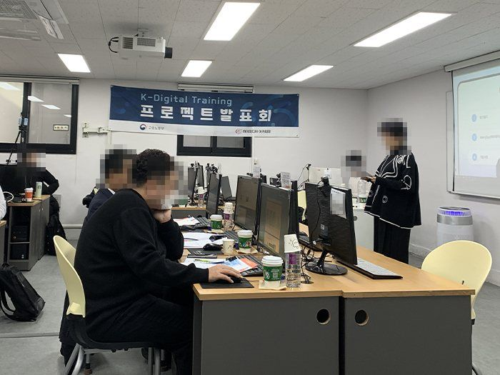
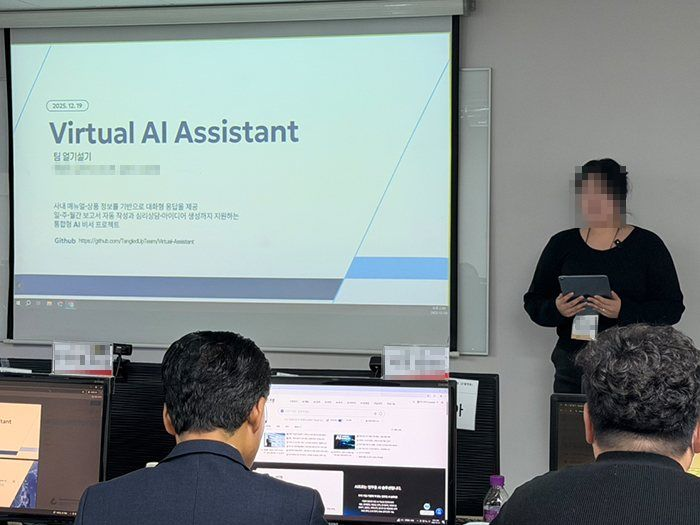
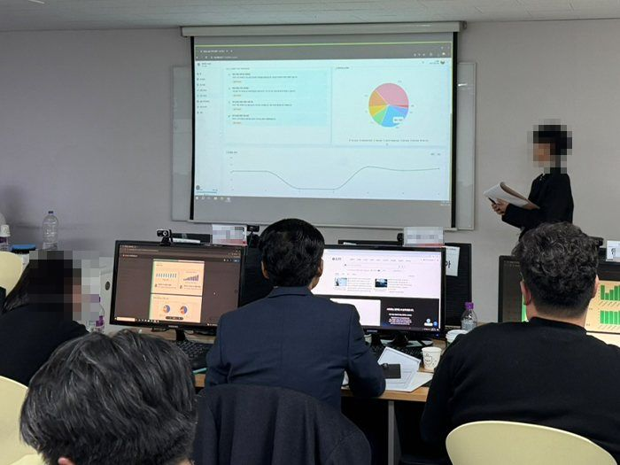
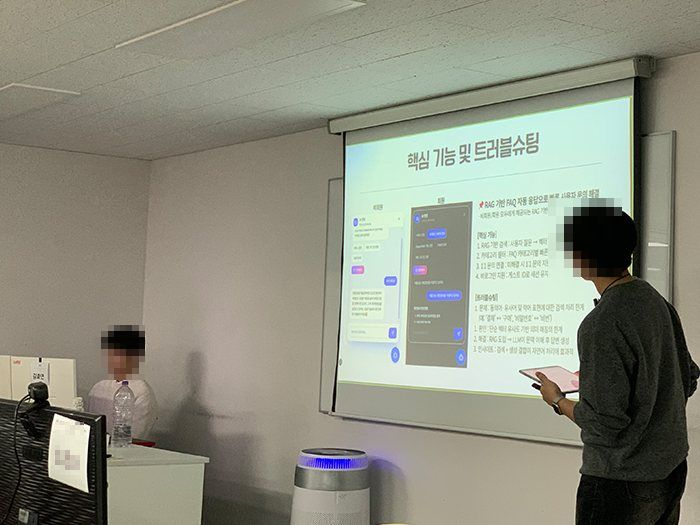
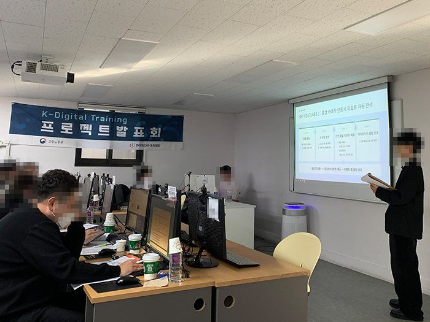
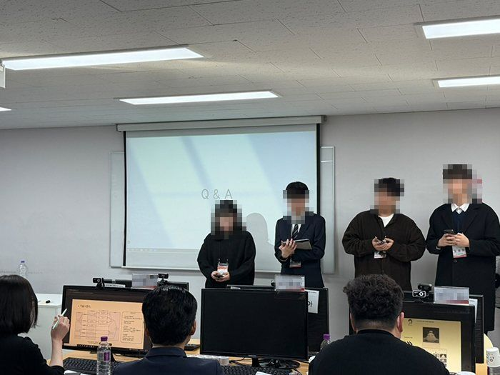
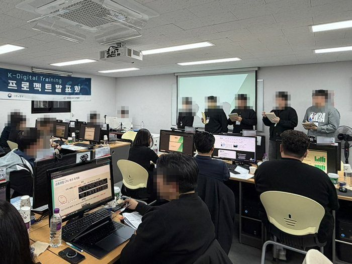
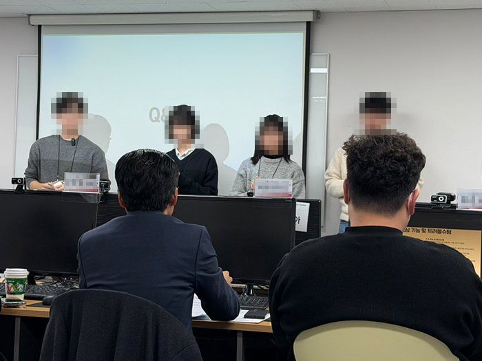
출처: 하이미디어아카데미 강남캠퍼스 갤러리 · 11기 프로젝트 발표회
최종발표에 협약기업 인사담당자·임원진을 모시고, 발표한 프로젝트로 그날 바로 1:1 현장 면접을 봅니다. 서류 전형을 기다릴 필요가 없습니다.
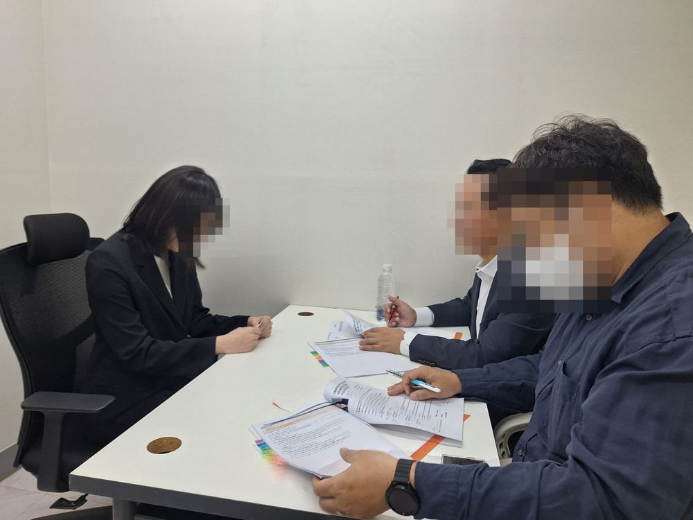
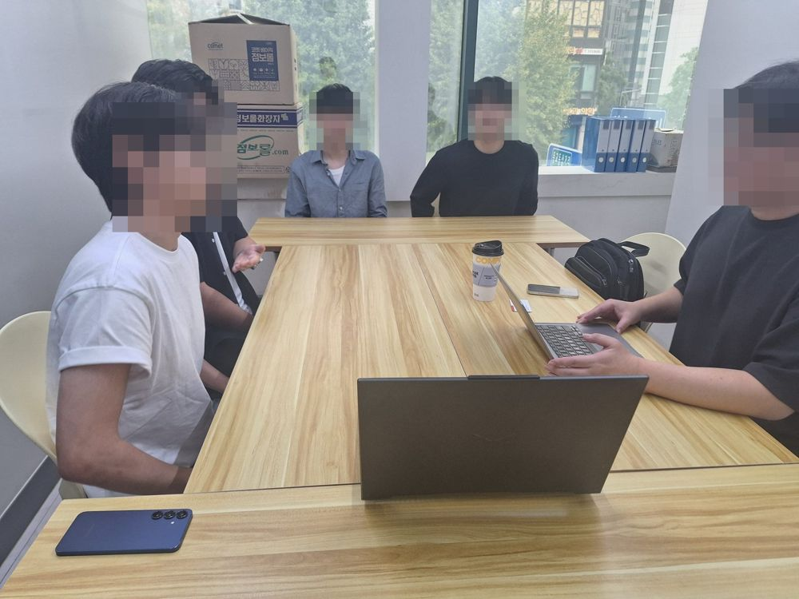
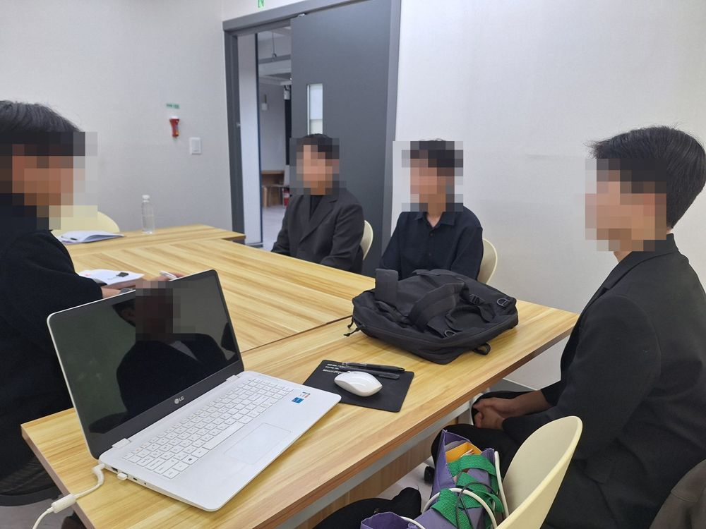
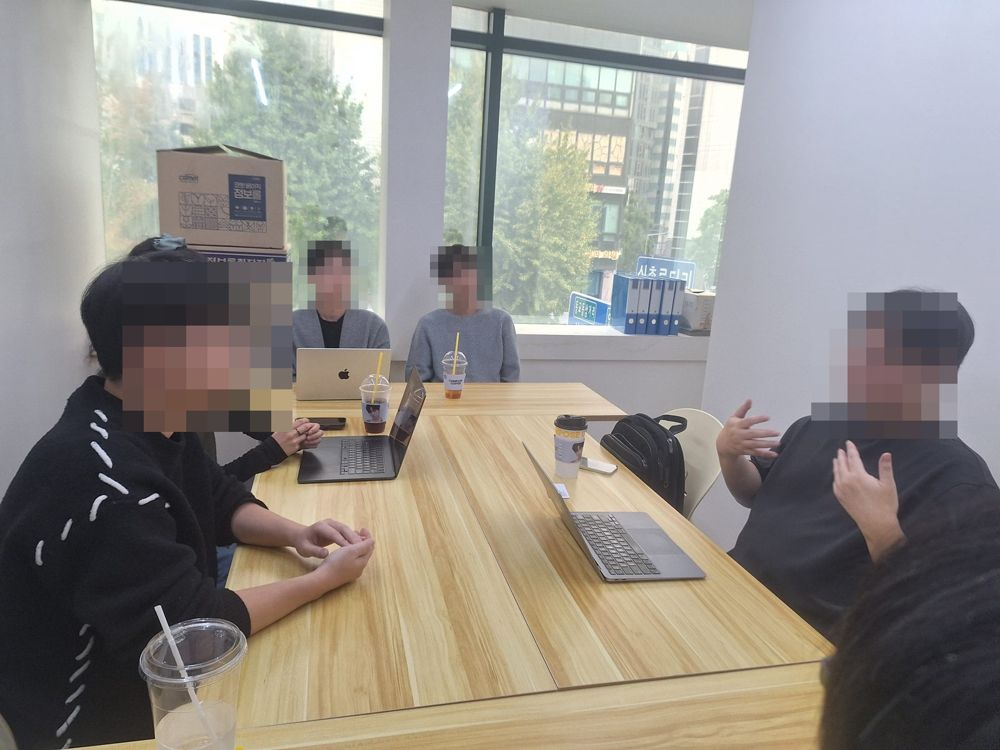
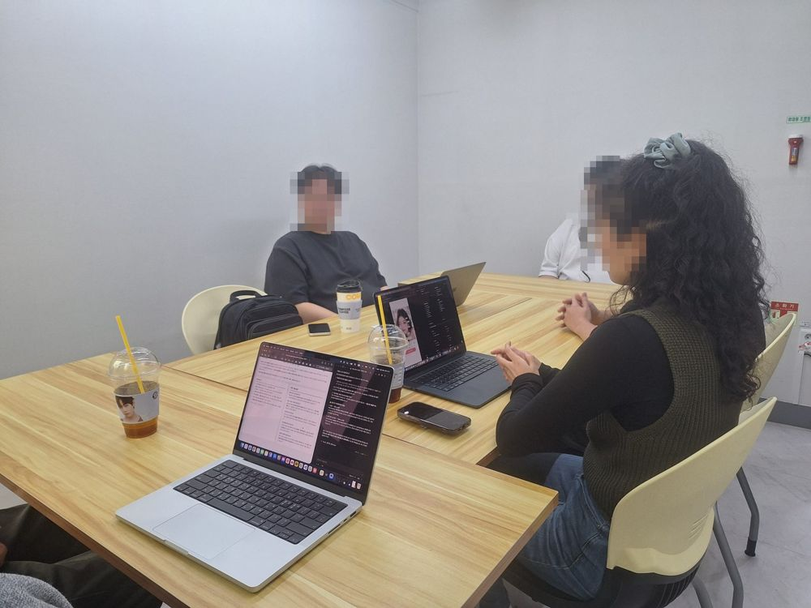
심화과정 수료 후 kt ds에 연봉 약 6,000만원으로 취업했습니다.
멘토와 실무 프로젝트를 완성하고 수료 3일 만에 취업했습니다.
전공자가 아니어도 신입 연봉 4,600만원으로 취업했습니다.
AI 전문 조직에 연봉 4,500만원으로 취업했습니다.
개별 수료생 취업 사례이며 결과는 개인에 따라 다를 수 있습니다. 수료생 취업 기업: 데이타솔루션 · 모티프테크놀로지스 · 새롬정보시스템 · 한국딥러닝 · 퀀텀에이아이 · 세이코어 등
“멘토님 피드백에서 현직자의 관점을 들을 수 있어 좋았습니다.”
심화과정 수료생 후기
“단순한 기술 습득을 넘어, 실무에서 요구되는 문제 해결 능력을 쌓을 수 있었습니다.”
심화과정 수료생 후기
“2달간 내가 노력한 만큼 폭풍 성장할 수 있는 기회라고 생각한다.”
심화과정 수료생 후기
정규 과정은 CS 기초와 자바 기본 문법부터 시작합니다. 비전공 신입으로 연봉 4,600만원에 취업한 수료생 사례도 있습니다.
심화 과정은 IT 교육 이수자 중 AI 기초 지식이 있는 분이 대상이라 단독 지원도 가능합니다. 정규 과정을 마치면 이 조건을 그대로 갖추게 되어 8개월 트랙으로 이어집니다. 개별 신청 조건은 상담에서 안내합니다.
FDE는 고객 현장의 문제를 정의하는 데서 출발해 기술 선택, 구현, 평가, 배포·운영까지 책임집니다. 그래서 이 과정은 코딩뿐 아니라 평가셋, 비용 비교, 운영 문서까지 포트폴리오로 남깁니다.
목요일 공통 피드백과 조별 멘토링은 19–21시 온라인으로 진행합니다. 특강과 평일 실습은 강남 교육장에서 합니다.
최종발표 당일 8~12개 참여 기업과 현장 면접을 봅니다. 이후에도 서류 클리닉, 모의 면접, 기업 매칭, 동창 네트워크로 재취업까지 지원합니다.
커리큘럼, 멘토, 기업과의 만남, 선배 네트워크. 현장에 배포하는 엔지니어가 되는 8개월의 길이 이미 준비되어 있습니다.
하이미디어아카데미 · 1993년 설립 · 전국 14개 캠퍼스 · 고용노동부 우수훈련기관 5년 인증